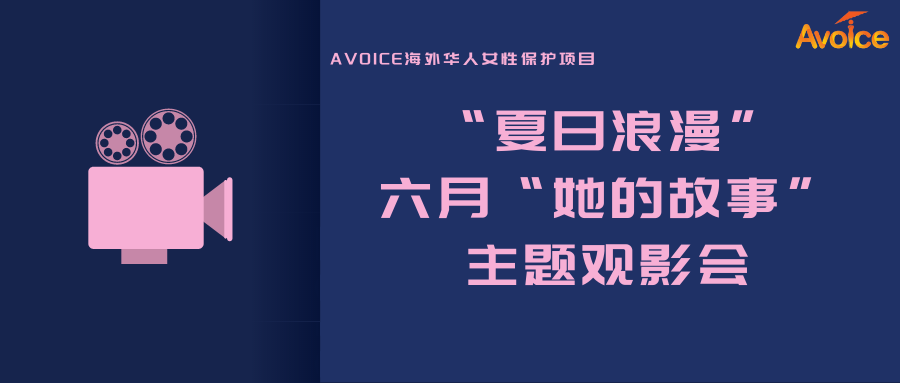
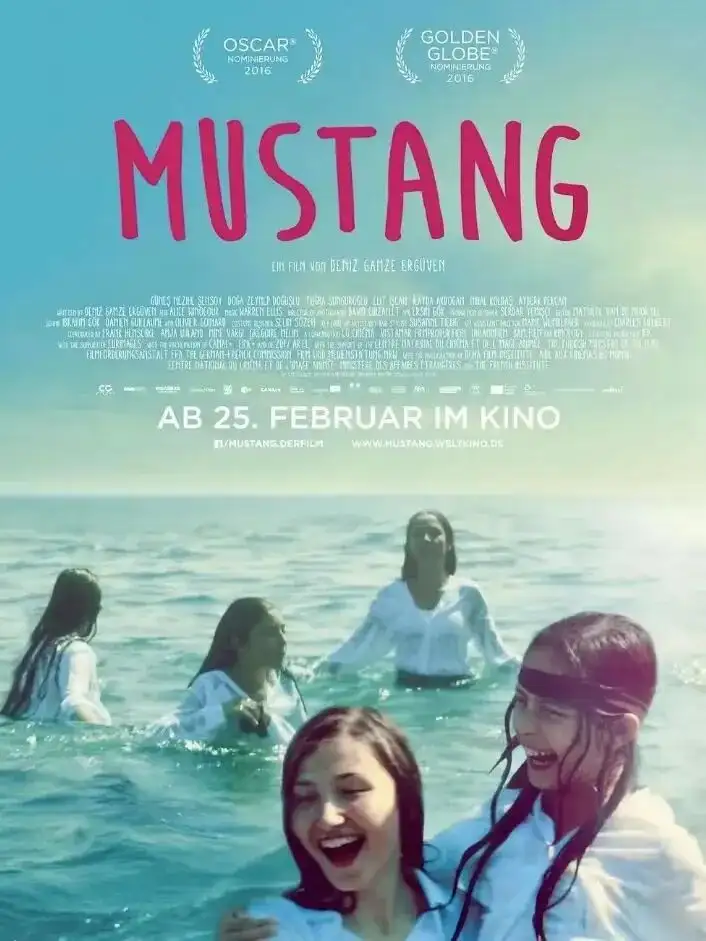
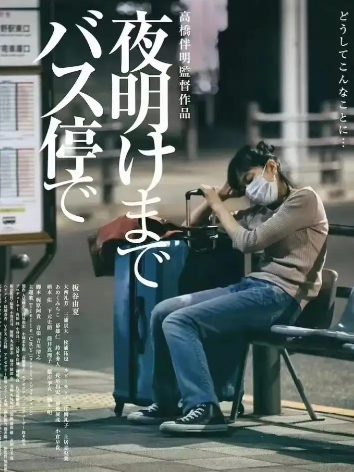

当彩虹色的旗帜飘扬，早蝉鸣起时，夏日便拉开了帷幕。
希望Avoice为大家带来的几部电影，也可以陪你一同体味晚风的悠然。
《爱玛》
爱玛作品中主人公爱玛美丽、聪慧而富有，同时也是一位不折不扣的幻想家。她热心关注身边的浪漫故事，却又固执地认为自己永远不会陷入其中。
她勇敢洒脱、思想独立、勇于反抗，在父权制社会中追求平等与自由，不被传统的价值观和婚姻观禁锢，却也自私、势利、缺乏仁慈之心，但正是这种“不完美”使她更加真实。
会议主题：Avoice观影会之《爱玛》
会议时间：2023/06/24 20:00-22:30 （北京时间）
会议链接：https://meeting.tencent.com/dw/FZTjCC54yJrp
会议号：125-602-044
《野马》

在土耳其北部的一个小村落，五姐妹为了摆脱不堪的命运、追寻自由而不懈努力。
她们渴望的“自由”却不被所有人接受，她们被戴上了一个个名为贞德的枷锁镣铐：
“不能和男孩子打闹，那样会成为别人眼中的笑话。”
“初夜没落血，你肯定失去贞洁了。”……
法式的浪漫唯美与现实主义的冷峻在画面中交织：海边的欢笑，逃出家门看球赛的兴奋，以及阳光下年轻闪亮的肌肤，无不令人感受到青春活力的恣意绽放，与之形成鲜明对比的是黑色的连衣裙，刻板的待客礼仪，和奶奶、叔叔的冷漠无情。本片以明快的色调和质朴清新画面，表达了深刻的女性议题。
会议主题：Avoice观影会之《野马》
会议时间：2023/07/01 20:00-22:30（北京时间）
会议链接：https://meeting.tencent.com/dw/YSIgaDtkKEWX
会议号：616-639-180
《我的塞林格岁月》
她为了追梦来到纽约，并成为知名文学经纪人的助理。当阅读来自世界各地的来信时，她被读者的真诚触动，于是打破规则用自己的方式去回应书迷，从中也看清内心真正想要什么。坚持心中的梦想与热爱，遵循内心做自己想要做的事情。当感情出现问题之后及时止损，在事业蒸蒸日上的时候勇敢放弃。跟随初心，追逐自己的作家梦。
这是一部蕴含女性自我探寻成长力量的“她故事”。
会议主题：Avoice观影会之《我的塞林格岁月》
会议时间：2023/07/08 20:00-22:30（北京时间）
会议链接：https://meeting.tencent.com/dw/gS1PAeXLQihh
会议号：387-453-718
《在巴士站直到天明》

半夜的日本街头，一位中年女性惨遭他人杀害。
这样看似平平无奇的女人，究竟是为何如此殒命？
一起真实的凶杀案，一位无家可归的人死于“碍眼”。
背后是破碎的泡沫、失败的追梦、女性的贫困、制度的缺位……
“她，也是我们。”
会议主题：Avoice观影会之《在巴士站直到天明》
会议时间：2023/07/15 20:00-22:30（北京时间）
会议链接：https://meeting.tencent.com/dw/YtctcPxQCnND
会议号：640-685-586
期待跟大家周六晚观影会相见哦～
作者｜黄宇轩 孙煊婷 方梓奕
排版、封面制作｜倪雪贞